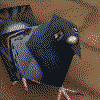

welcome to the pigeonguide !
your #1 stop for all things !

you might be thinking…
so who are you?
hi im laura (she/they) welcome to my website :)
im in my early 20s, autistic and very normal.
i love to talk about all sorts :> consider contacting me!
i strictly never mean to imply more than i explicitly say/write, so it’s best to avoid interpreting around my sentences.
this whole site is about the stuff i like, so i wont belabour:
o.o have you heard king gizzard & the lizard wizard btw?
so what is this site?
i want to use this site to share intricacies of the systems i use in my life, the stuff i like and why i like it, and how you might do and like the same!
i believe we are stifled by restrictions imparted by plaintext and style and character limits. this is partly my attempt to show that you can express yourself beyond a microblogging about-me or social media profile.
this site is for my past self! if some or all of it doesn’t apply to you, that’s okay!
so why might i care?
you don’t know what you don’t know, and i might! knowing is cool, so lets know together :>
i used to not know about everything i care about today. i wish for more ways for more people to encounter such things, so im doing my part in that process!
the things i know now have drastically helped my quality of life, my motivation, and my capability. they may well for yours too. lets see, shall we!
but what is this site NOT?
i don’t want to limit the scope. many many facets of life can be systematised, and many things are awesome, so this is not a site “about tech”, nor “about pigeons”.
i don’t want to talk about should. only what i like, and occasionally what i would like to happen.
i don’t want to be a nerd, because this stuff can be accessible to everyone. the biggest barrier to entry is the feeling that it isn’t. i wont feed into that.
i don’t want to burn out, but i will! so i will try not to leave things underbaked, but the site won’t ever be done.
so what do you actually like?
systems
i used to think my muse was definitely maths, then definitely music, then definitely chemistry, then definitely coding, then definitely linguistics, with dozens of smaller others along the way: speed cubing, drumming, physics, tetris, juggling, flashcards, linux, cooking, tasks, memos. i gradually and eventually came to realise that it’s the systems behind them that truly captivate me.
pigeons
if you live in a city, there’s a chance you haven’t quite taken in just how many pigeons there are, just how beautiful they are, and just how much they get up to during their day-to-day. the history of the rock doves that live in every single city is immense, and the more ive come to know about them, the more impossible it has been to stop paying attention to every single one.
music
i think music rivals game as one of the most enriching mediums of art in the modern era. the following are unparalleled to me: the sheer breadth and variety in the pool of existing music, the inspiration and transformation of ideas between artists, the low barrier of entry, the experience of live performance, and the ability to affect mood in such a short time.
study
learning is cool now! so SUE me!! it’s a pity that so many people don’t recognise the joy in learning for the sake of learning, because it augments all learning. it took me a long time to discover the way i actually learn, and no manner of learning-style model remotely helped. i got through my pre-university schooling via sheer engrossment in the topics, and when that stopped working i had no means of forcing it any further. learning how my mind compartmentalises and links and recalls ideas over the past few years has been phenomenal.
so how did you make this site?
this section is called a “colophon” btw!
this site was writen in org-mode, using emacs with doom. i export the plaintext .org files into .html, and use .css to style the output. the theme is based on catppuccin, using your system’s sans-serif and mono fonts. im planning to add a light mode and high contrast mode based on system settings. here’s my todo list for the site.
this site was created without any assistance from ai.